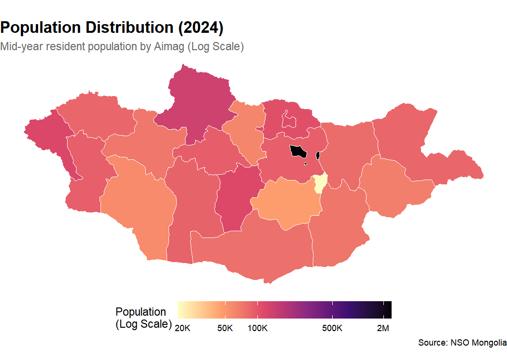

mongolstats is your gateway to the National Statistics Office of Mongolia (NSO). Access official data, analyze economic trends, and map regional statistics—all from within R.
Why mongolstats?
-
Instant Access: Query thousands of official datasets directly from
-
Tidy Data: Analysis-ready
tibbleformat compatible withdplyrandggplot2. - Mapping Ready: Built-in administrative boundaries for effortless geospatial analysis.
- Reliable: Smart caching and robust error handling for smooth workflows.
Installation
You can install the development version of mongolstats from GitHub with:
# install.packages("devtools")
devtools::install_github("temuulene/mongolstats")Quick Start
1. The Economic Pulse: GDP Trends
Visualize Mongolia’s economic growth in seconds.
library(mongolstats)
library(dplyr)
library(ggplot2)
# Set language to English
nso_options(mongolstats.lang = "en")
# Fetch GDP data - using labels for clarity
gdp <- nso_data(
tbl_id = "DT_NSO_0500_001V1",
selections = list(
"Indicator" = "GDP, at current prices",
"Economic activity" = "Total",
"Year" = c(
"2010", "2011", "2012", "2013", "2014",
"2015", "2016", "2017", "2018", "2019",
"2020", "2021", "2022", "2023"
)
),
labels = "en" # Get English labels
)
# Visualize
gdp |>
ggplot(aes(x = as.integer(Year_en), y = value / 1e6)) + # Convert to Trillions
geom_area(fill = "#42b883", alpha = 0.6) +
geom_line(color = "#2c3e50", linewidth = 1.2) +
geom_point(color = "#2c3e50", size = 3, shape = 21, fill = "white", stroke = 1.5) +
scale_y_continuous(labels = scales::label_number(suffix = "T")) +
scale_x_continuous(breaks = scales::pretty_breaks()) +
labs(
title = "Mongolia's GDP Growth (2010-2023)",
subtitle = "Gross Domestic Product (in Trillions MNT)",
x = NULL,
y = NULL,
caption = "Source: NSO Mongolia via mongolstats"
) +
theme_minimal(base_size = 14) +
theme(
plot.title = element_text(face = "bold", size = 16),
plot.subtitle = element_text(color = "grey40"),
panel.grid.minor = element_blank(),
panel.grid.major.x = element_blank()
)
2. Mapping Regional Population
Discover how population is distributed across the country.
library(sf)
# 1. Fetch Population by Aimag
# Get all region codes first
regions <- nso_dim_values("DT_NSO_0300_002V1", "Region")$code
pop <- nso_data(
tbl_id = "DT_NSO_0300_002V1",
selections = list(
"Region" = regions,
"Year" = "2023" # Use the year label
),
labels = "en" # Get English labels for joining
) |>
filter(Region != "0") |> # Exclude National Total (code "0")
mutate(Region_en = trimws(Region_en)) # Clean leading spaces in labels
# 2. Get Administrative Boundaries
map <- mn_boundaries(level = "ADM1")
# 3. Join and Map
map |>
left_join(pop, by = c("shapeName" = "Region_en")) |>
ggplot() +
geom_sf(aes(fill = value), color = "white", size = 0.2) +
scale_fill_viridis_c(
option = "magma",
direction = -1,
labels = scales::label_number(scale_cut = scales::cut_short_scale()),
name = "Population"
) +
labs(
title = "Population Distribution (2023)",
subtitle = "Mid-year resident population by Aimag",
caption = "Source: NSO Mongolia"
) +
theme_void() +
theme(
plot.title = element_text(face = "bold", size = 16),
plot.subtitle = element_text(color = "grey40"),
legend.position = "bottom",
legend.key.width = unit(1.5, "cm")
)
Documentation
Full documentation is available at temuulene.github.io/mongolstats.
- Getting Started - Your first epidemiological analysis
- Discovery Guide - Find and explore tables
- Mapping Guide - Work with administrative boundaries
Contributing
We welcome contributions! Please see the Contributing Guidelines for details.